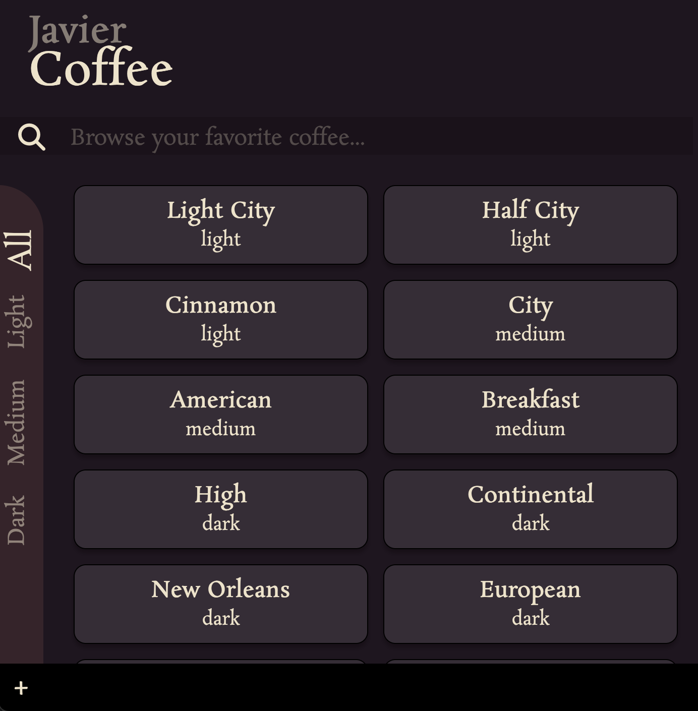

UI/UX EXPLORATION
To improve my front-end UI/UX design and coding skills, I recently undertook to select a community project on Figma and work to translate it into code using custom CSS. I selected Nickelfox Design's Coffee Delivery App Exploration, focusing on the Home Screen design.
I challenged myself to use custom CSS for a modal. The modal is triggered when the user clicks on the + icon to add a coffee to the list. On click, a JavaScript event toggles the hideModal and showModal CSS classes. These classes change the modal opacity on a 0.5 second transition. When the modal is hidden, it is still there, but the pointer-events:none property means it cannot be interacted with.
Another challenge was to reproduce the sidebar with the text in left-to-right, bottom-to-top orientation, as if rotated 90 degrees counter-clockwise. I used writing-mode: vertical-lr; combined with a 180-degree rotation transform to realize this design in practice.
There is plenty to learn from this project, in particular I have not added images yet, but plan to do so in the future.
To see the project and interact with it, please click on the image above. You can see the code on its GitHub repo.

API INTEGRATION